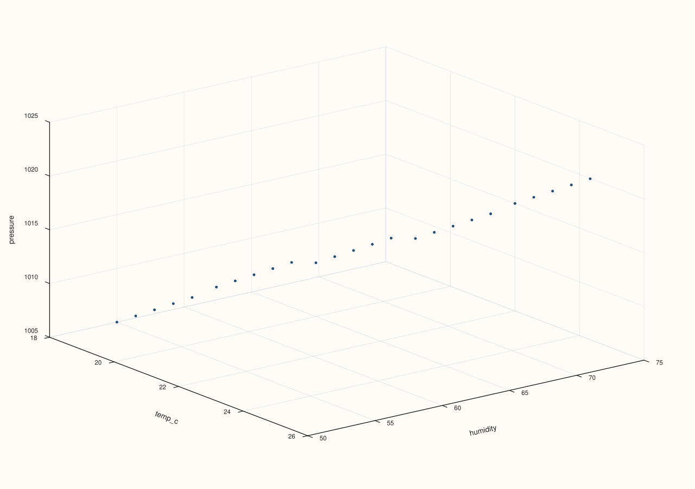

ArchivePlotAccessor::triplot¶
Back to ArchivePlotAccessor API Reference
Signatures¶
pluss::pl::Studio ArchivePlotAccessor::triplot() const
pluss::pl::Studio ArchivePlotAccessor::triplot(const pluss::pl::flash::TriplotOptions& options) const
pluss::pl::Studio ArchivePlotAccessor::triplot(pluss::msharp::RangeView::Of<std::string_view> keys) const
pluss::pl::Studio ArchivePlotAccessor::triplot(pluss::msharp::RangeView::Of<std::string_view> keys,
const pluss::pl::flash::TriplotOptions& options) const
What It Does¶
Flattens every record, in every catalog of the depth stack, into one combined pool of rows,
then builds a pairwise small-multiple grid across the selected numeric keys — reuses
AtlasPlotAccessor::triplot directly, one layer up (where
“frames” are catalogs and “cases” are records instead of DataFrame rows).
Important
An empty keys selection tabelizes the whole archive, not just the selected keys
Same rule as depth_compare()/depth_facet(): the
no-argument and options-only overloads (keys = {}) resolve to every numeric key in the
first catalog, which isn’t known ahead of time — so those overloads tabelize the
entire archive up front. Passing an explicit, non-empty keys avoids this, tabelizing
only those keys, the same scoped behavior surface()/cloud3()/
etc. have.
Parameters¶
keys (RangeView<std::string_view>, defaults to {})
The numeric keys to include, at least three. An empty range (the default) selects every
numeric key in the first catalog — see the important callout above.
options (const pluss::pl::flash::TriplotOptions&)
The identical struct documented on
AtlasPlotAccessor::triplot (kind, labels,
max_features/max_panels/rows/cols/max_points, ridge_levels, show_grid,
sizing fields, auto_size).
Returns¶
pluss::pl::Studio
A figure with one small-multiple pane per key pair, flattened across every catalog’s
records.
Examples¶
Example 1. No-argument call: default options, every numeric key in the first catalog.
using namespace pluss::kindle::literals;
std::vector<pluss::kindle::Catalog> catalogs;
for (int i = 0; i < 5; ++i) {
double base = static_cast<double>(i);
catalogs.push_back(pluss::kindle::Catalog({
"temp_c"_k = pluss::kindle::Stream(pluss::make_series({18.0 + base, 19.0 + base, 20.0 + base, 21.0 + base, 22.0 + base})),
"humidity"_k = pluss::kindle::Stream(pluss::make_series({55.0 - base, 60.0 - base, 65.0 - base, 70.0 - base, 75.0 - base})),
"pressure"_k = pluss::kindle::Stream(pluss::make_series(
{1005.0 + base * 2, 1008.0 + base * 2, 1010.0 + base * 2, 1012.0 + base * 2, 1015.0 + base * 2})),
}));
}
auto archive = pluss::kindle::Archive(catalogs, pluss::kindle::Stream(pluss::make_note({"day1", "day2", "day3", "day4", "day5"})));
auto chart = archive.plot().triplot();
chart.show();
All 25 records (5 catalogs × 5 records each) are pooled together, and every pair among
temp_c, humidity, pressure gets its own scatter pane.

Example 2. Options-only overload: same default key selection, explicit Cloud kind (the
default made explicit).
using namespace pluss::kindle::literals;
std::vector<pluss::kindle::Catalog> catalogs;
for (int i = 0; i < 5; ++i) {
double base = static_cast<double>(i);
catalogs.push_back(pluss::kindle::Catalog({
"temp_c"_k = pluss::kindle::Stream(pluss::make_series({18.0 + base, 19.0 + base, 20.0 + base, 21.0 + base, 22.0 + base})),
"humidity"_k = pluss::kindle::Stream(pluss::make_series({55.0 - base, 60.0 - base, 65.0 - base, 70.0 - base, 75.0 - base})),
"pressure"_k = pluss::kindle::Stream(pluss::make_series(
{1005.0 + base * 2, 1008.0 + base * 2, 1010.0 + base * 2, 1012.0 + base * 2, 1015.0 + base * 2})),
}));
}
auto archive = pluss::kindle::Archive(catalogs, pluss::kindle::Stream(pluss::make_note({"day1", "day2", "day3", "day4", "day5"})));
pluss::pl::flash::TriplotOptions options;
options.kind = pluss::pl::flash::TriplotKind::Cloud;
auto chart = archive.plot().triplot(options);
chart.show();

Example 3. Keys-only overload: an explicit key list, default options.
using namespace pluss::kindle::literals;
std::vector<pluss::kindle::Catalog> catalogs;
for (int i = 0; i < 5; ++i) {
double base = static_cast<double>(i);
catalogs.push_back(pluss::kindle::Catalog({
"temp_c"_k = pluss::kindle::Stream(pluss::make_series({18.0 + base, 19.0 + base, 20.0 + base, 21.0 + base, 22.0 + base})),
"humidity"_k = pluss::kindle::Stream(pluss::make_series({55.0 - base, 60.0 - base, 65.0 - base, 70.0 - base, 75.0 - base})),
"pressure"_k = pluss::kindle::Stream(pluss::make_series(
{1005.0 + base * 2, 1008.0 + base * 2, 1010.0 + base * 2, 1012.0 + base * 2, 1015.0 + base * 2})),
}));
}
auto archive = pluss::kindle::Archive(catalogs, pluss::kindle::Stream(pluss::make_note({"day1", "day2", "day3", "day4", "day5"})));
auto chart = archive.plot().triplot(pluss::msharp::RangeView::Of<std::string_view>{"temp_c", "humidity", "pressure"});
chart.show();

Example 4. Full keys-and-options call, capping max_features to 3 (a no-op with exactly
three keys, shown for completeness).
using namespace pluss::kindle::literals;
std::vector<pluss::kindle::Catalog> catalogs;
for (int i = 0; i < 5; ++i) {
double base = static_cast<double>(i);
catalogs.push_back(pluss::kindle::Catalog({
"temp_c"_k = pluss::kindle::Stream(pluss::make_series({18.0 + base, 19.0 + base, 20.0 + base, 21.0 + base, 22.0 + base})),
"humidity"_k = pluss::kindle::Stream(pluss::make_series({55.0 - base, 60.0 - base, 65.0 - base, 70.0 - base, 75.0 - base})),
"pressure"_k = pluss::kindle::Stream(pluss::make_series(
{1005.0 + base * 2, 1008.0 + base * 2, 1010.0 + base * 2, 1012.0 + base * 2, 1015.0 + base * 2})),
}));
}
auto archive = pluss::kindle::Archive(catalogs, pluss::kindle::Stream(pluss::make_note({"day1", "day2", "day3", "day4", "day5"})));
pluss::pl::flash::TriplotOptions options;
options.max_features = 3;
auto chart = archive.plot().triplot(
pluss::msharp::RangeView::Of<std::string_view>{"temp_c", "humidity", "pressure"}, options);
chart.show();

Notes¶
Requires at least three numeric keys, whether resolved from the empty-keys default or an explicit list — the same requirement
AtlasPlotAccessor::triplotenforces.An empty
keystabelizes the whole archive — see the important callout above.Every catalog’s records are pooled together — no per-catalog breakdown, unlike
cloud3()’s per-catalog traces.
See Also¶
ArchivePlotAccessor::cloud3: a single 3D scatter of exactly three named keys, broken out per catalog — the depth-aware counterpart to this method’s pooled-across-catalogs view.Archive::plot: the entry point this accessor is reached from.